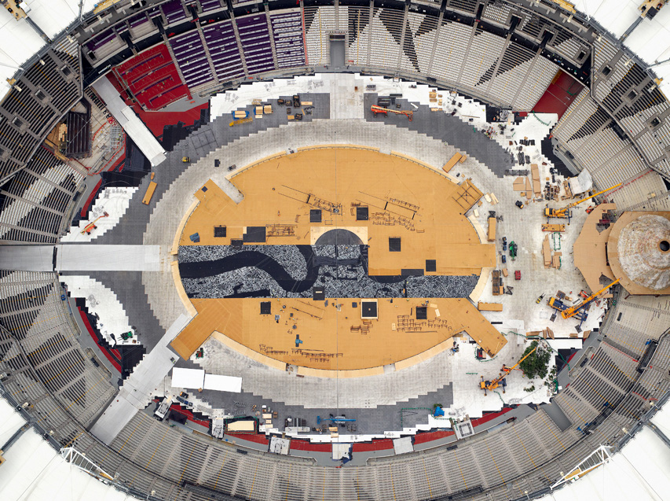
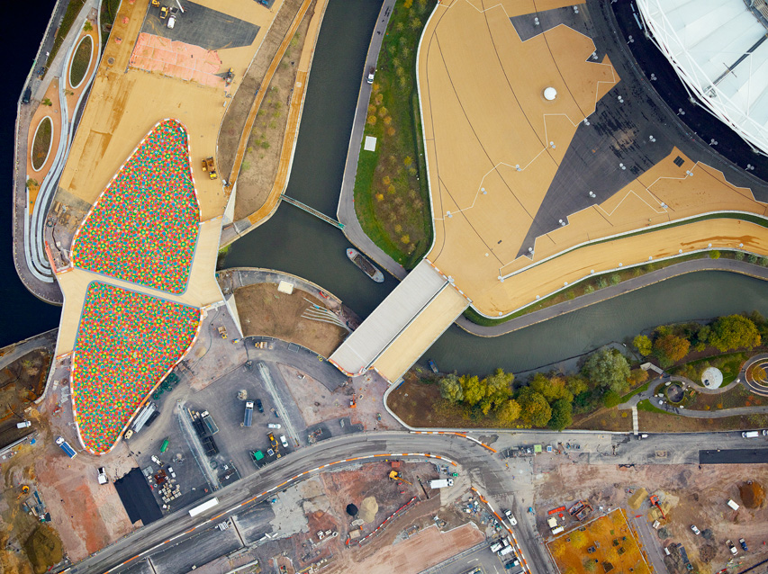
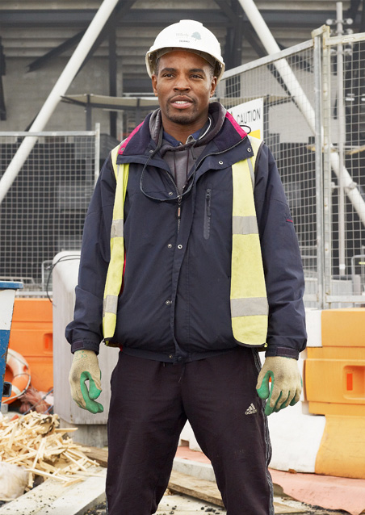
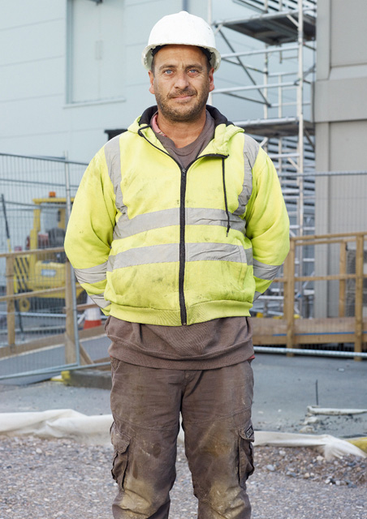

Under Construction
‘E20 12′ Under Construction is a documentary project which combines large format and minutely detailed aerial landscapes with arresting portraits of the workforce taken during the construction of the 2012 Olympic site.
By using the two drastically different perspectives, photographer Giles Price manages to capture both the personal and grand nature of the project to create the London Olympic site.